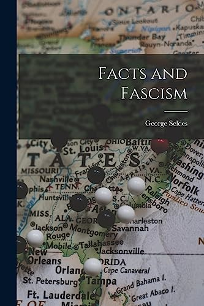
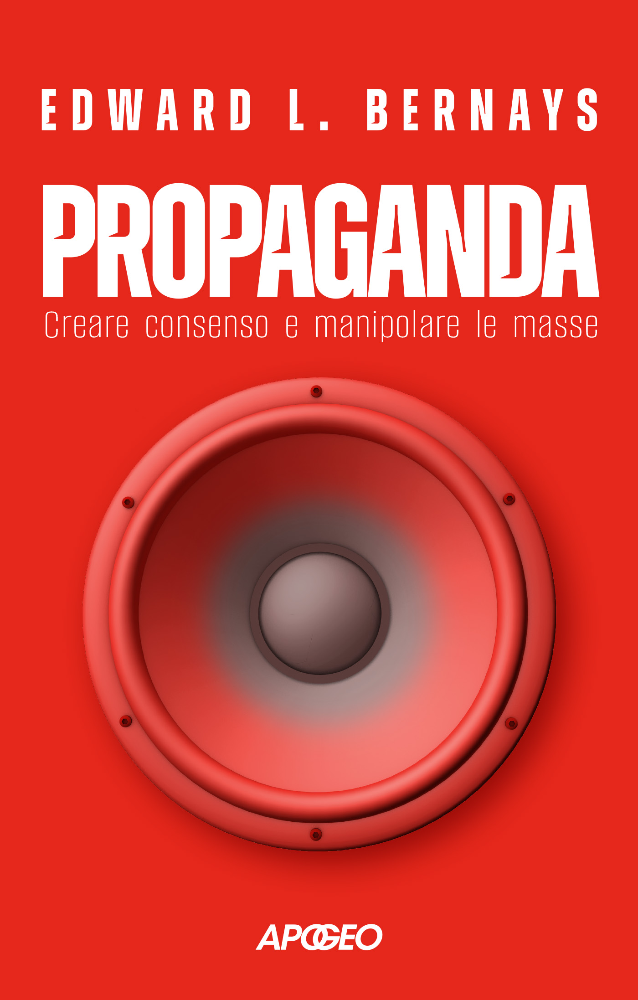

32:44 · 4 OPERE
George Seldes, Fatti e Fascismo
Il filo del discorso
La presentazione di Facts and Fascism di George Seldes diventa una riflessione sul rapporto fra informazione, interessi economici e autonomia di giudizio. Caldarella legge l’apertura del libro del 1943 e ne riprende la tesi: combattere il fascismo senza spiegare chi lo finanzia lascia intatti alcuni dei suoi presupposti. La storia del giornalista, i conflitti con la censura e il ricordo di un colloquio con Hindenburg introducono il problema delle notizie che un sistema editoriale decide di pubblicare o di sopprimere. Il relatore propone poi confronti contemporanei e interpreta la giustizia attraverso la formula del vantaggio del più forte, discussa nel primo libro della Repubblica. I giudici del nazismo e il linguaggio dei fatti alternativi servono a distinguere potere, legalità e verità. Il richiamo a Pasolini lega il mestiere dell’intellettuale alla capacità di collegare indizi senza disporre delle prove di un’inchiesta giudiziaria. Nell’ultima parte, la Terra piatta, il metodo di Eratostene e il filmato dell’assassinio di Kennedy aprono una discussione sulla differenza fra credere a un’autorità, comprendere una dimostrazione e ordinare correttamente le informazioni. La chiusa contesta i racconti storici celebrativi, soprattutto quando trasformano la violenza in impresa gloriosa. La scheda mantiene attribuite le interpretazioni del relatore e distingue i riferimenti verificabili dalle ipotesi sulla censura, sugli omicidi e sulle intenzioni degli attori storici.
I libri nel discorso

Facts and Fascism
Copertina: COPERTINA DELLA RISTAMPA Hassell Street Press, 2021, 296 pagine, ISBN 9781014012937; Google Books registra Creative Media Partners, 9 settembre 2021. Immagine intera con mappa degli Stati Uniti, pedine, titolo e George Seldes. Edizione storica: In Fact, New York, 1943; CiNii descrive la terza edizione, 286 pagine. La copertina moderna non è attribuita al volume mostrato nel video.
Ristampa moderna esplicitamente distinta dall’edizione 1943. Titolo e autore leggibili, provenienza dalla scheda dello stesso ISBN; nessun uso del logo del catalogo o di copertine di altri titoli di Seldes.
George Seldes e Facts and Fascism, 1943; lettura dell’inizio del volume.
Passaggio 0:04 ↗ · Fonti e libro ↗
La Repubblica
Copertina: Laterza · La Repubblica · edizione con testo a fronte di riferimento
Immagine associata all’ISBN di riferimento e controllata visivamente; edizione e traduzione non identificate come quelle citate o lette nel video.
Repubblica di Platone, libro primo, tesi di Trasimaco sulla giustizia come vantaggio del più forte.
Passaggio 14:14 ↗ · Fonti e libro ↗
Propaganda
Identificazione probabile
Copertina: Apogeo · Saggi, marzo 2026 · traduzione e redazione Aldo Ballerini
Copertina autentica dell’edizione Apogeo del marzo 2026, successiva alla registrazione del video: è un riferimento bibliografico attuale, non l’esemplare citato nel filmato. Titolo originale dell’opera Propaganda, 1928.
Bernays, richiamato per la manipolazione dell’opinione pubblica; titolo non pronunciato nel segmento.
Passaggio 20:37 ↗ · Fonti e libro ↗
Scritti corsari
Copertina: Garzanti, Elefanti bestseller, 19ª edizione, 15 gennaio 2015, 272 pagine, prefazione di Alfonso Berardinelli, ISBN 9788811688372. Copertina bianca con ritratto seppia di Pasolini. Raccolta pubblicata originariamente nel 1975; l’immagine non è della prima edizione.
Immagine autentica dell’opera, controllata visivamente; l’edizione di riferimento non è attribuita al filmato.
Scritti corsari e l’articolo sul Corriere con la formula Io so; identificato Il romanzo delle stragi.
Passaggio 21:41 ↗ · Fonti e libro ↗Minutaggi ricavati da testi automatici, da riascoltare. Le identificazioni probabili sono segnalate accanto ai libri.